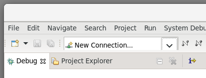

Click the the drop-down button right of the green bug icon .

Double click Intel System Debugger to create a debug configuration.
A new debug configuration named New_Configuration is created. Click Debug to start debugging.

Intel® System Debugger can be used with the Simics® simulator to provide a debug solution, similar to what is available with hardware assisted connections to real hardware, with a virtual platform. The integration also adds Simics simulator specific functionality to the Intel System Debugger tools and user interface. This user's guide describes that functionality.
This section describes how to connect Intel System Debugger to Simics. Note that this information is also available in Intel System Debugger's built in help.
If planning to debug a binary with source code, the source code and build tree should be available on the same host where Intel System Debugger has been installed.
Start a terminal in the directory of the Simics Project, and start the simulation with the selected target script. If the installed model was the Quick-Start Platform (QSP), the launch command on Windows would be:
simics targets\qsp\firststeps.simics
From Simics CLI, enable remote debugging with the start-eclipse-backend command:
simics> start-eclipse-backend
Starting TCF on:
TCP:localhost:1534
TCP:155.72.86.143:1534
This command will open a TCP port to which Intel System Debugger can connect to.
By default, the port 1534 will be used. To find this information later in the session,
re-run start-eclipse-backend or alternatively tcf.status.
Strings from start-eclipse-backend can be copied and used when connecting
to Simics from Intel System Debugger (from the example above):
TCP:localhost:1534
Use this when Simics and Intel System Debugger run on the same machine (localhost).TCP:155.72.86.143:1534
Use this when Simics runs on a remote machine (155.72.86.143 in this case).If both Simics and Intel System Debugger run in the same machine, skip forward to the section Connect Intel System Debugger to Simics.
If Simics and Intel System Debugger run on different hosts, and we need to debug remotely, Intel System Debugger must be able to connect to the TCF port on the remote target running Simics. Typically a firewall would block most ports.
If a port is known to be open on the remote host, then this can be specified
the first time start-eclipse-backend is run (see help start-eclipse-backend).
If no open port can be found, either open a port in the firewall, or create an SSH tunnel from the local host to the remote.
start-eclipse-backend.155.72.86.14344443333:ssh -L 3333:localhost:4444 155.72.86.143tcp:localhost:3333 which is described in the next section.In the above example, different ports were used to clarify the difference between remote and local host port. But if the standard TCF port was available on the remote and local host, then the SSH tunnel command would be instead be:
ssh -L 1534:localhost:1534 155.72.86.143
And Intel System Debugger would then connect to tcp:localhost:1534.
SSH is usually available on most Linux systems, and for Windows, Microsoft provides a port of OpenSSL.
Here we create a connection to Simics. The section can be re-used in subsequent debugging sessions.
Start Intel System Debugger.
Create a connection by clicking New Connection from the dropdown menu 
Select Manually select target, and select any target to reveal the
Connect Remotely checkbox in the lower corner of the window
to reveal new choices in the top of the window.
Select Connect to remote Simics(R) Simulator and in the Address field
write the IP address and TCF port of the target to connect to, for
example 155.72.86.143:1534.
Click Next to show the Connection Summary, and then click Finish to
close the connection window.
Connect to the target by clicking the connect button to the right of the connection.
From the Console view, the Simics CLI is now available.
Once connected, it is possible to start Debugging. Debugging requires a debug configuration of the type Intel System Debugger.
Click the the drop-down button right of the green bug icon .
Double click Intel System Debugger to create a debug configuration.
A new debug configuration named New_Configuration is created. Click Debug to start debugging.
For more debugging tips see the Intel Simics Debugger built-in documentation.
The Simics simulator support in Intel System Debugger integrates with the general support for reverse debugging, included in the standard Eclipse C/C++ Debug Tools. This adds the following buttons to the debug toolbar:
If the selected context is not active when a step is requested, simulation will first run, in the selected direction, until it is.
Reverse execution has to be enabled before it can be used. Some start-up scripts do this automatically, but if the start-up scripts you use do not, you can enable it with the Reverse Toggle button. Since reverse execution is based on recording simulation state and inputs received, you will not be able to reverse immediately after it has been enabled. To create a recorded history into which you can reverse, you have to run forward first.
The cost in terms of performance of having reverse execution enabled is usually quite small, but reverse execution itself is a complex operation and reverse stepping can, in some situations, be considerably slower than stepping forward.
There are limits to reverse execution. There may be events in the simulation, such as certain configuration changes, that you cannot reverse over. Specific virtual platforms may impose additional limitations.
Note: Current versions of Eclipse C/C++ Development Tools feature a drop down menu next to the Reverse Toggle button, with the options Enable Software Reverse Debugging and Enable Hardware Reverse Debugging. These options serve no purpose with the Simics simulator and can be ignored. Use the button as a plain toggle button to turn reverse execution on and off.
The Simics simulator features a rich set of options to stop simulation whenever a certain condition occur.
This of course includes traditional breakpoints that halt execution on certain instruction or data addresses, but also much more advanced criteria, such as when a certain text is printed on a terminal.
Of these more advanced break conditions, only those related to software context creation, destruction and execution are currently exposed to the UI for event breakpoints available in Intel System Debugger.
To use the other forms of break conditions, use the Simics simulator CLI, available in the Console view.
In particular, the breakpoint manager object (bp) has several useful commands for this.
Type bp. followed by Tab at the Simics simulator prompt to see the list.
In Intel System Debugger, there are four Simics simulator specific event breakpoint types:
To set an event breakpoint, select Add Event Breakpoint (C/C++)... from the view menu in the Breakpoints view. This opens the Properties for C/C++ Event Breakpoint dialog. Select an event type in the Event Type list and then enter, either the name of the task or process you want to intercept the event for, or a Context Query in the Context text field. If you leave the context field empty, simulation will stop every time the event occurs.
For these event breakpoints to work, software tracking has to be enabled in the Simics simulator configuration. Since software tracking affects the performance of the simulation, most start-up scripts do not enable it automatically. Instead, you can enable it from the Simics simulator CLI in the Console view. The details depend on the structure of the virtual platform.
If the start-up scripts have configured software tracking, but not enabled it, for a simulated machine with a top level simulation component called board, it can be enabled and disabled with the commands:
board.software.enable-tracker
board.software.disable-tracker
The details of how to initially configure the software tracking framework and individual trackers is beyond the scope of this document. Please refer to the regular Simics simulator user's guides.
A context query consists of a sequence of parts separated by a slash character (/).
This sequence specifies a path in the context tree.
A context matches the query if the last part of the query matches the properties of the context, and the parent of the context matches the query excluding the last part. The properties of a context match a part if each property specified in the part matches the property of the same name in the context, or if the name of the context matches the string specified in the part.
The contexts are assumed to be placed in a tree. Each context has zero or one parent. If it has zero parents it is a child of the root of the tree.
There are also two wild cards. The part * matches any context.
The part ** matches any sequence of contexts.
If the query starts with a /, the first part of the query must match a child of the root of the context tree.
Note: The * wild card matches an entire node, not part of its name or attribute.
Thus, a query such as /foo/bar/baz* is invalid, since * can only be used on its own, between /, or at the end of the query after a /.
The context query syntax can be described by the following grammar:
query = [ "/" ], { part, "/" }, part ;
part = string | "*" | "**" | properties ;
properties = property, { ",", property } ;
property = string, "=", value ;
value = string | number | boolean ;
string = quoted string | symbol ;
quoted string = '"', {any-character - ('"' | '\')
| ('\', ('"' | '\'))}, '"' ;
symbol = letter, { letter | digit } ;
number = digit, { digit } ;
boolean = "true" | "false" ;
letter = ? A-Z, a-z or _ ? ;
digit = ? 0-9 ? ;
any-character = ? any character ? ;
This section illustrates the syntax with some examples and what a user might mean when providing such a query:
httpd - matches all contexts named "httpd".pid=4711 - matches any context with a property called "pid" that has the value 4711./server/** - matches all contexts that are descendants of the top level context named "server"."Linux 2.6.14"/Kernel/* - matches all kernel processes in operating systems named "Linux 2.6.14".pid=4711/* - matches all threads in processes with the pid 4711./client/**/"rule30.elf" - matches the context for program "rule30.elf" running on the machine called client./server/**/HasState=true - matches all threads that are descendants of the context "server". Contexts with no state, typically containers, do not match the query.The Simics simulator can provide more information about the memory configuration of the virtual platform than what is generally available with real hardware. To present some of this information, the Simics simulator support in Intel System Debugger includes the Memory Devices view.
For any physical memory space selected in the  Debug view, this view shows all devices (memories and peripherals) mapped into that memory space. The information includes the address range into which the device is mapped and the offset into that device of the mapping.
Debug view, this view shows all devices (memories and peripherals) mapped into that memory space. The information includes the address range into which the device is mapped and the offset into that device of the mapping.
If you select a mapping in the table, you can view the memory contents at that location in the standard Memory view, either by selecting View Memory from the context menu of the table, or by using the corresponding button in the view toolbar. The memory contents will be shown in the primary rendering configured in your Intel System Debugger installation.
Any problems retrieving a memory map will be shown in the status line at the bottom of the Workbench window. Problems resolving an individual entry in the map are indicated with a warning icon in the table and an explanation in the Information column.
The Memory Devices view is available under Window → Show View in the main menu of the standard Debug perspective, or from the Quick Access search facility at the top right of the Workbench window from any context.
The Simics simulator support in Intel System Debugger provides access to the Simics simulator command line interface (CLI) as a page in the normal Console view. A new page is created for each Simics simulator connection you make using the Connection drop down list and the Connect button in the main tool bar. Whenever a connection is selected, or an object in a debug session started using that connection is selected, the corresponding Simics simulator CLI page will be brought to front in the Console view.
The Simics simulator command line in the Console view works very much like it does when used directly from the command line version of the Simics simulator, with the same keyboard shortcuts, command history, and command completion proposals.
In order to limit memory consumption, the maximum number of lines stored in the scrollback buffer of the Console view page for the Simics simulator command line is set in the preferences. To change it, select Window → Preferences from the main menu and navigate to C/C++ / Debug / Simics and set Limit Console Output (number of lines) to the desired value.
To be able to provide Simics simulator command line keyboard shortcuts, even when those collide with global standard desktop shortcuts, as Ctrl-a does (go to the beginning of the line / select all text), the Simics simulator support in Intel System Debugger provides two additional key binding schemes. These match their standard counterparts everywhere, except in the Simics simulator CLI Console page:
To select either of these key binding schemes, select Window → Preferences from the main menu and navigate to General / Keys and use the Scheme drop down list.